同じ庭の描画データを軽量化
同じ30品。住人の撮影時刻は異なる。形・色・動き・解像度を変更しない。
測定条件と限界
390px before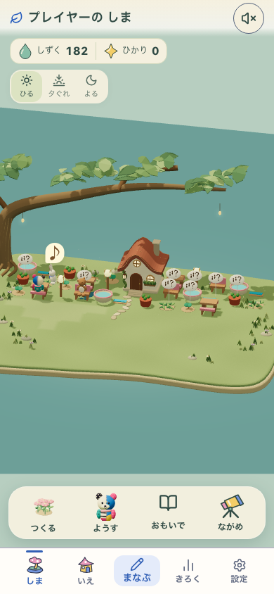
390px after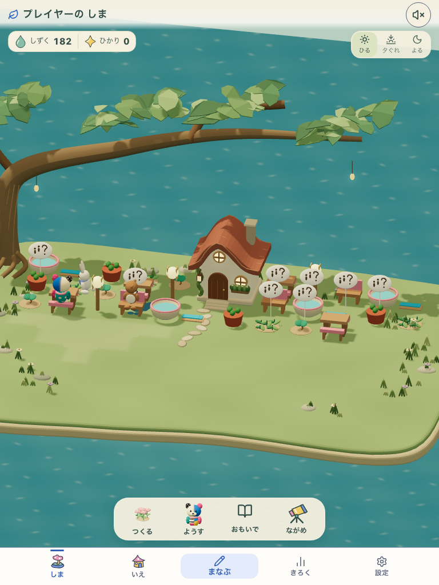
768px before 768px after
768px after水の発見・保存・再演（DEV診断）
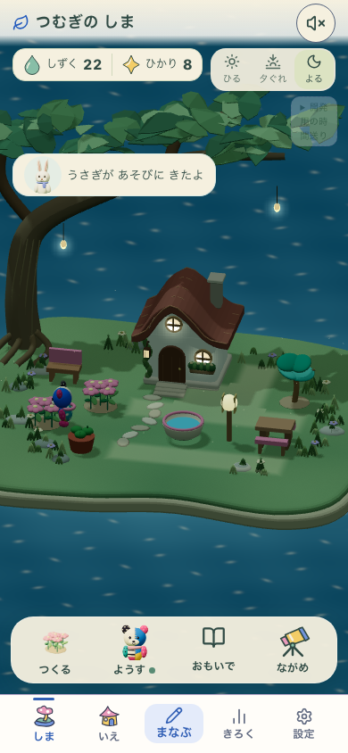
390px night-populated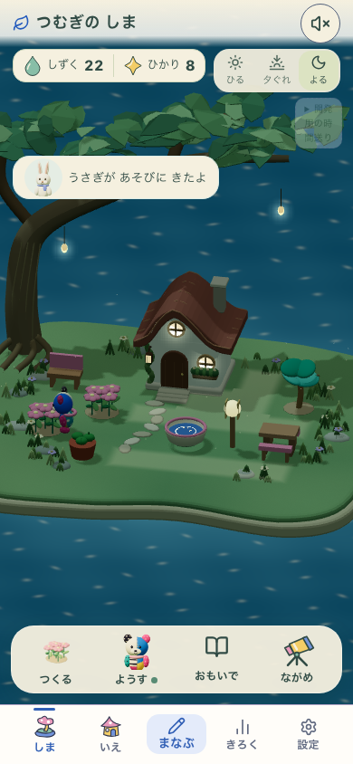
390px water-stars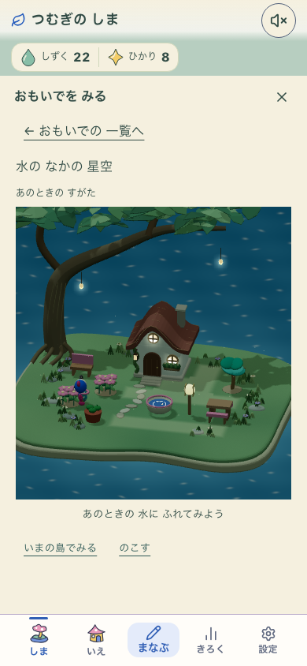
390px memory-replay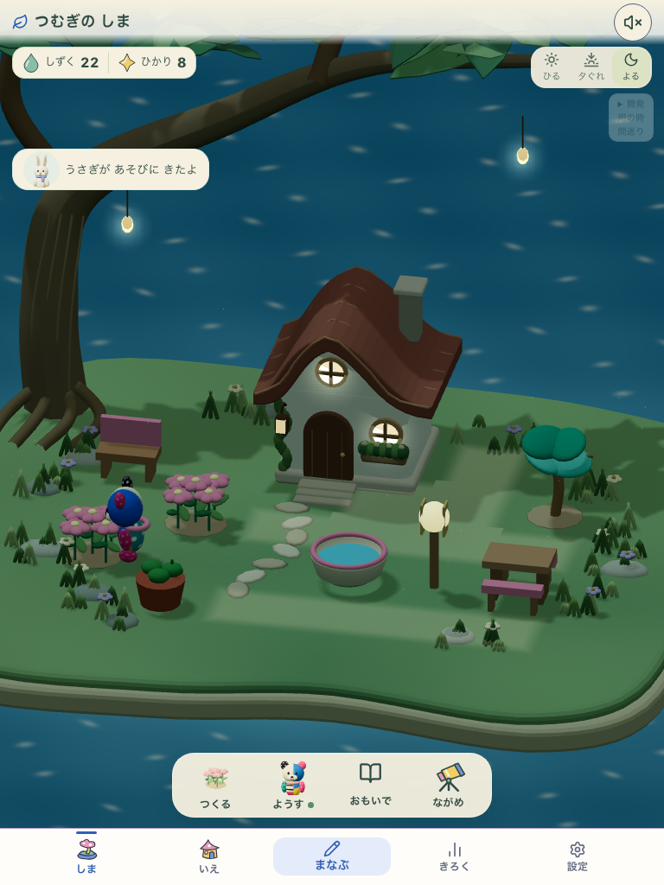
768px night-populated 768px water-stars
768px water-stars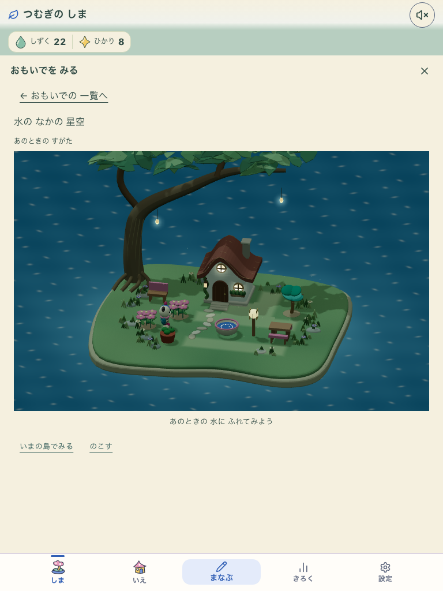
768px memory-replay本番形式・実初回からの一周
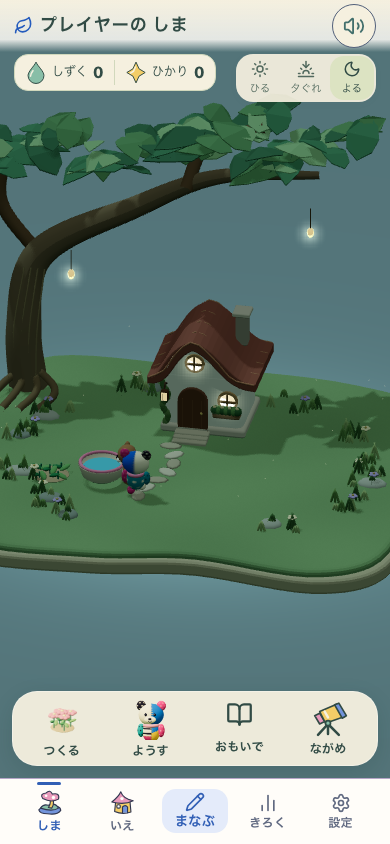
390px garden-night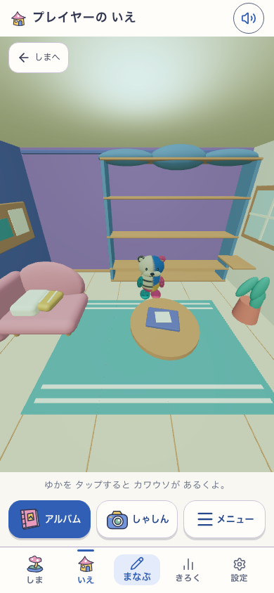
390px offline-interior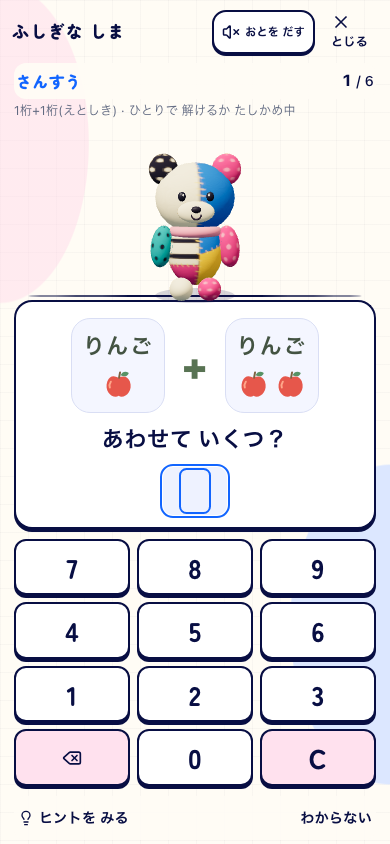
390px same-learning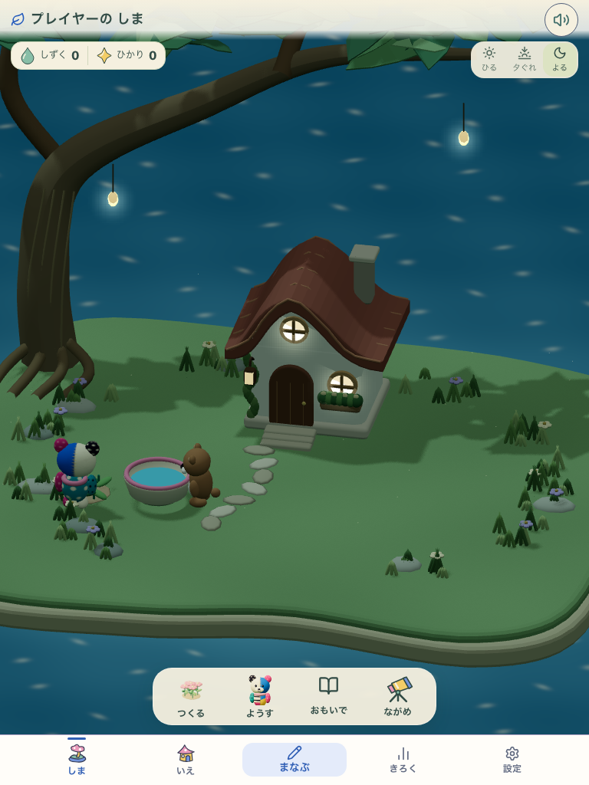
768px garden-night 768px offline-interior
768px offline-interior 768px same-learning
768px same-learning